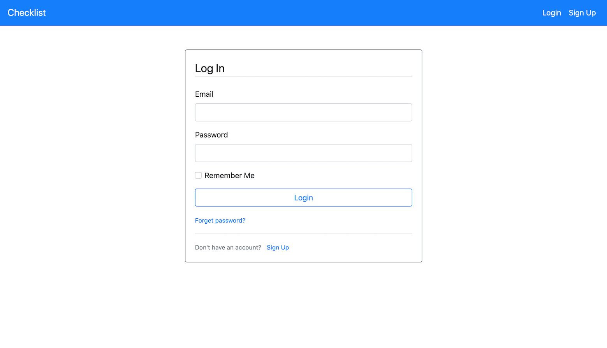
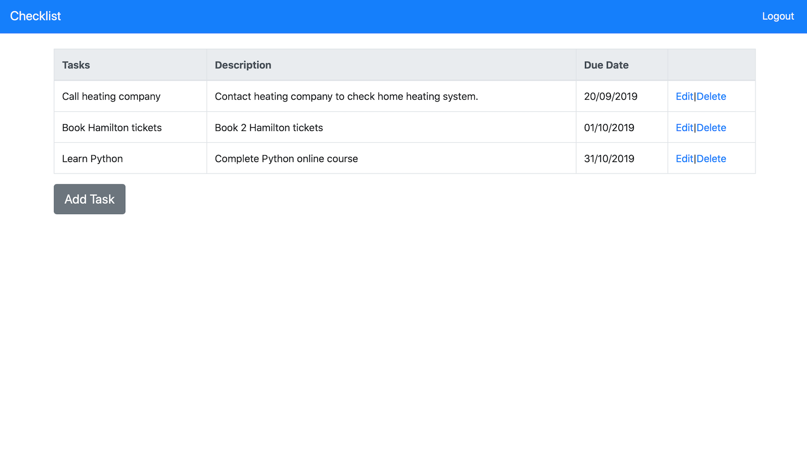
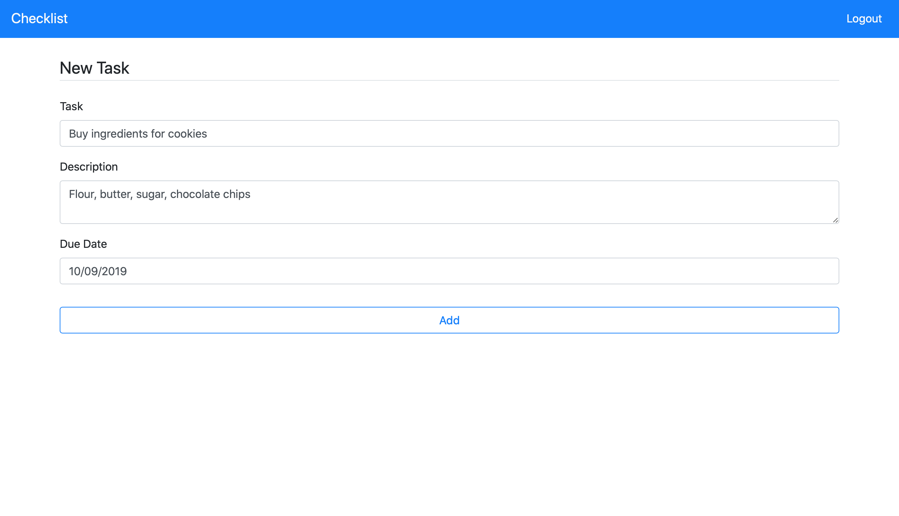
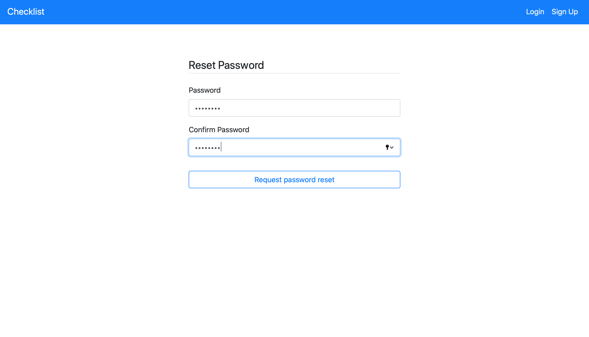
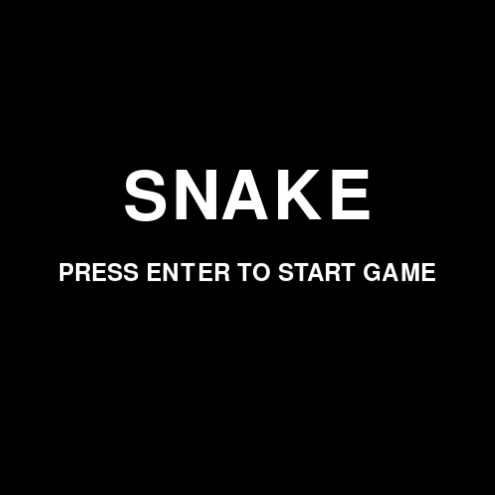
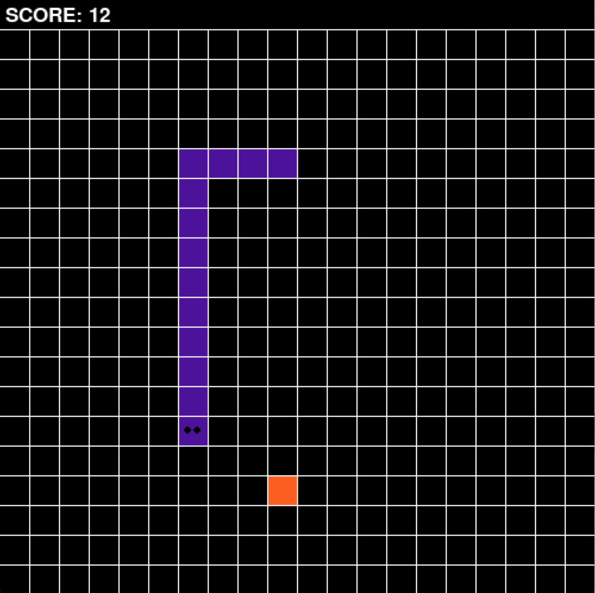
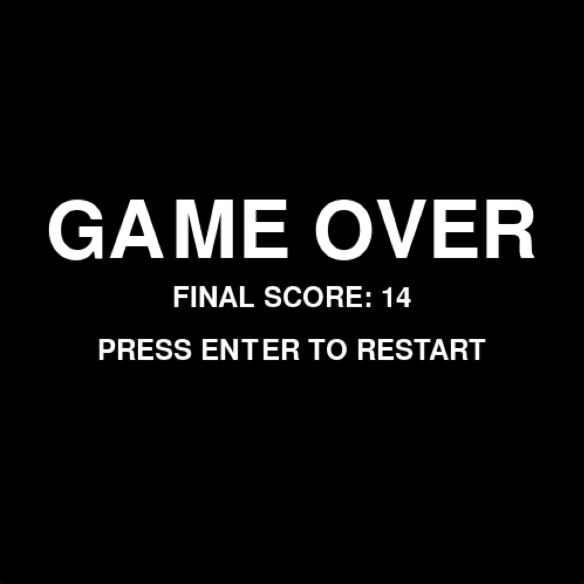

Projects
Checklist App
- Python, Flask, HTML, BootstrapThe idea for this project came about because I wanted to acquire some knowledge of how back-end programming worked and Flask seemed like a good place to start. Again, this concept was simple enough for a beginner to understand some of the main principles of back-end web development e.g. how to store and retrieve information from databases. This project also introduced me to resources such as Bootstrap which made creating a clean and responsive user interface easy to allow more time to focus on the functionality of the app.
In order to use the app, users must register via the sign-up form. They can then login to add tasks with a description and due date. They have options to edit the tasks and delete them after completion. There is also a function which allows users to reset their password.
    View On GitHubSnake Game
- Python, PygameThe Snake game was my first coding project. I decided to create my own version of the game as it’s always nice to start with something fun when you are learning how to code. The project was simple enough for a beginner, but also allowed me to practice what I have learnt from completing a Python online course. The game was developed using the Pygame modules, using simple shapes that were drawn on to a grid and initialising keyboard controls to navigate the snake.
   View On GitHub